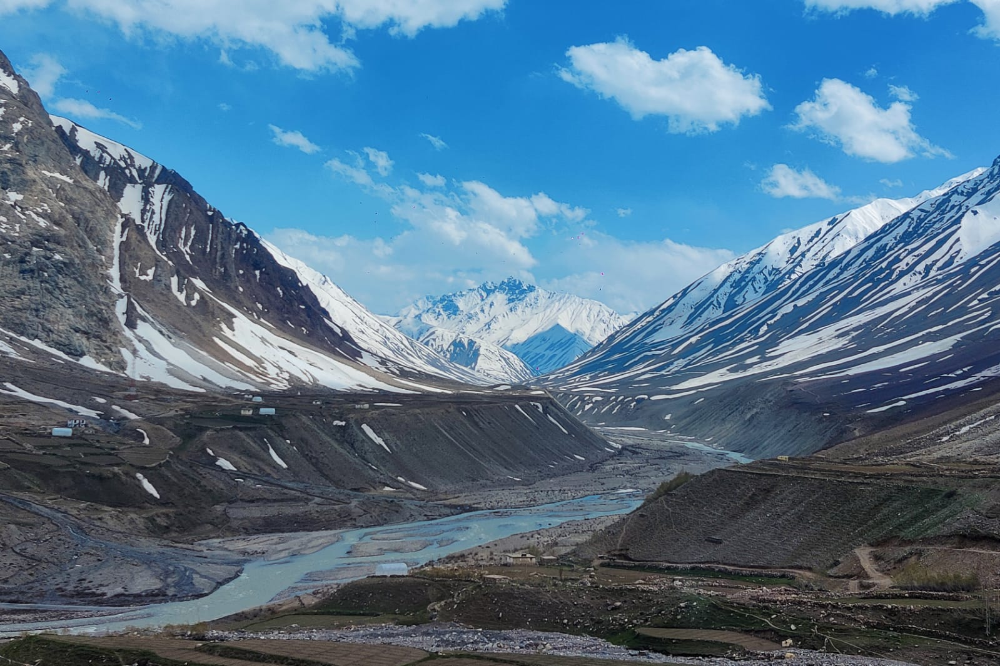
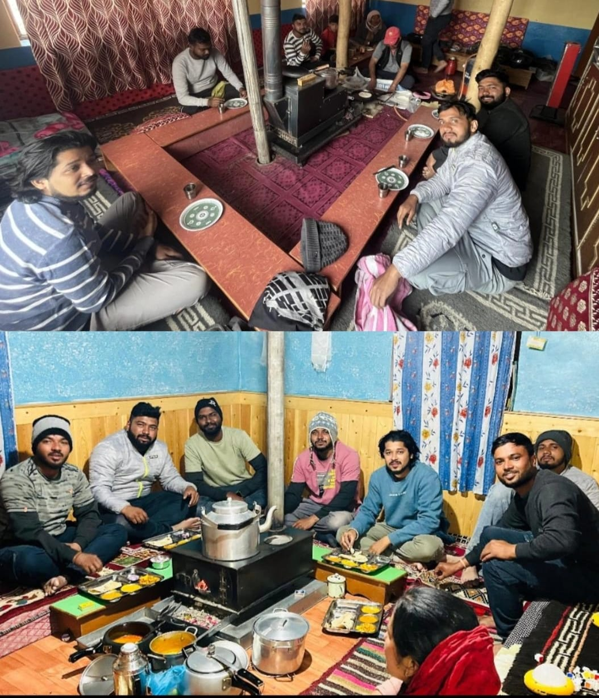
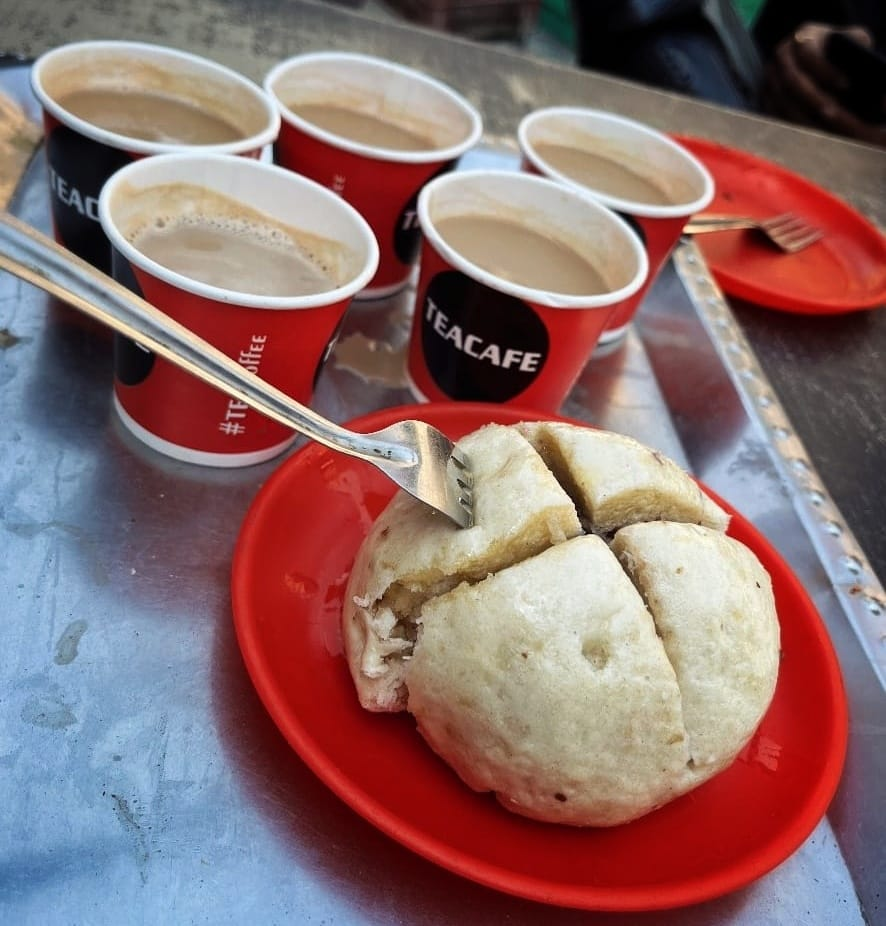

Spiti Valley

A Spiti Valley road trip or bike trip is actually a dream. The landscape changes as you travel from one region to the other, the monasteries loom in the horizon, there are rivers to cross and the stark barrenness of the land will leave you with nothing but wonder.
We had been planning our Spiti Valley road trip for a long time. The first time we visited Ladakh, I knew that I had to visit Spiti. Well, the trip happened only a few days back, but it was worth the wait.
So, if you are planning for a Spiti Valley road trip and are a bit clueless about what to do, you are in the right place. This travel guide will try to answer your most common queries about Spiti Valley and some more. Hope this helps you plan a perfect trip to Spiti Valley.
Destinations To Explore

Kaza

Key Monestry

Gue Villege

Chicham Bridge
Shimla: Gateway to the Himalayas
Shimla, the capital of Himachal Pradesh, is a charming hill station often referred to as the "Queen of Hills." Located at an altitude of 2,276 meters, it is surrounded by lush green forests, snow-capped peaks, and colonial architecture. The Ridge and Mall Road are the heart of Shimla, bustling with shops, cafes, and historic landmarks. Visitors can explore attractions like Christ Church, Jakhoo Temple, and the Viceregal Lodge. Shimla also serves as a starting point for journeys to other destinations in Himachal, including Spiti Valley. Its cool climate, scenic beauty, and serene ambiance make it a favorite among tourists and honeymooners. Rich in history and culture, Shimla provides a perfect blend of natural beauty and urban charm.
Chitkul: The Last Village on the Indo-Tibet Border
Chitkul is a quaint and picturesque village located in the Kinnaur district of Himachal Pradesh, at an altitude of 3,450 meters. Known as the last inhabited village near the Indo-Tibet border, it offers breathtaking views of the snow-clad Himalayas, lush green valleys, and the Baspa River. Chitkul is famous for its serene environment, traditional wooden houses, and friendly locals. The Mata Devi Temple and the ancient Buddhist monastery are popular attractions in the village. Trekking and exploring the surrounding meadows and forests are favorite activities for visitors. During the summer months, the fields bloom with vibrant flowers, adding to the village's charm. Chitkul's pristine beauty and untouched landscapes make it a paradise for nature lovers and photographers.
Tabo: The Ajanta of the Himalayas
Tabo is a beautiful place. It is the first major village that you will come across in Spiti valley if you are coming from Shimla.
Tabo is also known as the “Ajanta of Himalayas” because of the ancient Tabo Monastery and the age-old murals that it houses. Tabo Monastery was built sometime in 996 CE. The monastery is located within the village and not on a hilltop. This was a distinguishing feature of the early period monasteries built before 1300 AD. Similar examples can be seen in Alchi Monastery and Mangyu Temple Complex in Ladakh.
Once you enter the Tabo Monastery Complex, you will be transported to a different era. And once you look at the ancient murals, you will understand why Tabo is known as the Ajanta of Himalaya. They are simply grand and magnificent.
Tabo village also has some ancient caves that you can explore.
Kaza: Heart of Spiti Valley
Kaza is the headquarters of Spiti Valley and is the most important town of the region. The small town has most of the hotels and all the HRTC buses arrive at and leave from Kaza. While Kaza itself is a small town and hardly has much to offer in terms of attractions, it can serve as your base to explore the region. There are numerous hotels, guest houses and homestays available in Kaza. There are a couple of backpackers hostels as well. It is perhaps the only place in Spiti Valley where you will get good wifi in some of the hotels.
So you can stay at Kaza, get fuel for your car from the world’s highest fuel station and explore the rest of Spiti Valley.
Key Monastery: A Spiritual Marvel of Spiti
Key village is located about 15 km from Kaza and the most famous attraction of the place is the Key Monastery, whose picture has become eponymous with Spiti Valley itself. The Gompa is grand and beautiful and houses several important artifacts, idols and murals. It is one of the largest and most important monasteries in the region. The Key Gompa has temples, prayer halls, meditation rooms, schools, monk’s quarters, and hostels for young monks inside the complex.
Hikkim: World's Highest Post Office
Hikkim is quite famous because it has World’s highest post office in the village. Quite naturally, the place is quite a tourist attraction is Spiti Valley. The village itself is small and the few houses that are there are spread out.
You can visit the Hikkim post office, talk to the postmaster, buy several postcards and send them over to any address you like.
Gue Village: The Land of the Mummy
Yes, there is a mummy in Spiti valley. Gue Mummy Stupa is a latest addition to the attractions in Spiti Valley. Gue village is located about 38 km from Nako. Just after crossing Sumdo, there is a diversion from the main road towards Gue village. The village is about 12 km from the main road and Tabo is another 26 km from the point.
Gue has a monastery, but its main attraction is the Mummy, believed to be almost 530 years old. The mummy you see here is that of the Buddhist monk Sangha Tenzing. It is believed that the monk had undergone the process of self-mummification to attain this state.
As of today, there are only 24 such mummies of monks who had undergone self-mummification. If you look carefully, you can see his teeth, small patches of hair on the head and nails on the body. And all these are not preserved in the way done in Egypt! This process is different.
Chicham Bridge: Asia's Highest Suspension Bridge
Chicham Bridge is the latest addition in the attractions of Spiti Valley. Located at an altitude of 13596 feet, this bridge is said to be the highest motorable bridge in Asia connecting 2 villages – Chicham and Kibber. It took almost 15 years to build this bridge. You can cross Chicham Bridge and take the road forward towards Manali.
ChandraTal Lake: The Moon Lake of Himachal Pradesh
Chandra Tal, meaning "Lake of the Moon," is a stunning high-altitude lake in the Spiti region, located at an elevation of 4,300 meters. Surrounded by the majestic Himalayas, the lake is famous for its crescent shape, crystal-clear blue waters, and tranquil ambiance. It is a popular spot for trekkers and adventure enthusiasts, offering breathtaking views of the surrounding peaks. The lake holds significant spiritual and mythological importance, believed to be a resting place of celestial chariots in ancient times. During summer, the meadows around Chandra Tal bloom with vibrant wildflowers, making it a picturesque camping destination. Accessible via a challenging trek or motorable roads, the lake is a hidden gem for those seeking peace and natural beauty.

Spiti Valley Itinerary
Spiti Valley Itinerary
Here is a glimpse of a most-common itinerary for Spiti assuming you start at Shimla and end in Manali.
Day 1 | : Shimla – Sarahan
---------|----------------------------------------------------------------------------------------
Day 2 | : Sarahan – Kalpa
---------|----------------------------------------------------------------------------------------
Day 3 | : Kalpa – Nako – Gue – Tabo
---------|----------------------------------------------------------------------------------------
Day 4 | : Tabo – Dhankar – Pin valley (Mud Village)
---------|----------------------------------------------------------------------------------------
Day 5 | : Mud village – Kaza – Key – Kibber – Kaza
---------|----------------------------------------------------------------------------------------
Day 6 | : Kaza – Hikkim – Komic – Langza – Kaza
---------|----------------------------------------------------------------------------------------
Day 7 | : Kaza – Kunzum Pass – Chandratal Lake
---------|----------------------------------------------------------------------------------------
Day 8 | : Chandratal Lake – Manali
Best time to visit Spiti Valley
The best time to visit Spiti Valley is between May to September. This is the most popular and peak season for the tourists. However, you can visit Spiti at other times of the year as well. Here is a detailed breakdown of the seasons in Spiti Valley.
April & May
April and May is typically a shoulder season. If you want to visit Spiti valley during April, we recommend the second half of the month.
June to September (Peak Season)
As mentioned before, this is the best time to visit Spiti Valley in terms of weather and facilities and is also the peak season for tourists. It does not rain much in Spiti Valley and there is no distinct monsoon. It is like the summer season seamlessly merging into the early autumn – something that you will encounter in Ladakh as well.
November to March (Winter Spiti)
Spiti is a winter wonderland covered in a blanket of white snow. This has made Spiti Valley a coveted destination in the winters and winter Spiti trips are quite common these days. Apart from the snow covered landscape, winter is also the time to spot snow leopards in the region.


Homestays at Spiti Valley
Gone are the days when finding an accommodation in Spiti was tough. Now, there are many options of stay in Spiti Valley and around. Most of the expensive hotels and resorts can be found in Kaza, the headquarters of Spiti. Tabo also has a few hotels and guest houses.
However, if you want to experience village life at Spiti, then stay at a homestay. There are many homestays in the region and you can find them in the villages. You might not have to book ahead for a stay at a homestay in Spiti Valley. In these homestays, you stay with the locals, eat local food and understand their way of life and get an insight into the culture. The costs are generally low and depend on the village and season.
We had stayed at homestays in Dhankar, Mud, Langza and Key village during our Spiti Valley road trip.
Experience the warmth and comfort of a home with our curated selection of homestays. Whether you’re seeking a cozy mountain retreat, a serene village escape, or a culturally immersive stay, our homestays offer a personalized touch that hotels often lack. Enjoy homemade meals, local traditions, and heartfelt hospitality from hosts who treat you like family. Perfect for solo travelers, couples, and families, these stays provide a unique way to explore destinations while feeling at home. Discover hidden gems, connect with locals, and create unforgettable memories in authentic and welcoming settings.
Food at Spiti Valley
Food in Spiti valley is a mix of Tibetan, Nepalese and Himachali cuisine. You will find thukpas, momos, thentuk, mokthuk, chowmein in most of the restaurants and eateries. At the homestays, you might get some authentic Tibetan food.
We found good rajma Chawal at Nako and Tabo. At Dhankar, we ate Tibetan bread and thentuk at our homestay. Kaza had several restaurants serving Tibetan food. There was also a North Indian restaurant at Kaza market that served North Indian thali, samosa and chaats with very good milk tea.
Welcome to the Food section of my blog, where flavors and aromas come alive! This space is dedicated to celebrating the joy of food, from traditional recipes to modern culinary adventures. Whether you're a passionate foodie or just someone looking for a quick bite of inspiration, you'll find something here to savor. Explore regional delicacies, global cuisines, and tips for making everyday meals extraordinary. From street food treasures to healthy eating ideas, each post is crafted to delight your taste buds and inspire your kitchen experiments. Let's embark on a flavorful journey together!
